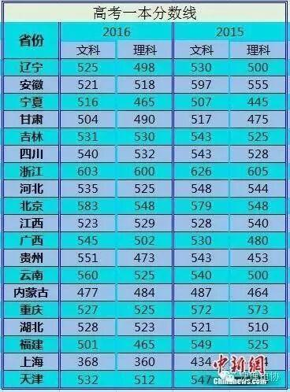

各地密集公布高考分数线
今年各地高考成绩已经陆续放榜。目前已有包括北京、上海等近20个省份公布高考分数线，与去年相比，各地的高考分数线均出现不同程度的变化。随着高考成绩放榜，备受舆论关注的各地“状元”也纷纷出炉。

全国已有19省份揭晓了今年的高考分数线。相比去年，各地的高考分数线均出现不同程度的变化。在已公布高考分数线的省份中，相比去年，安徽、重庆、福建等3省一本录取线降幅较大。
其中，安徽今年文理科一本分数线为521分和518分，较去年分别降低了76分和37分；重庆文理科一本线分别为527分和525分，较去年分别降低了45分和48分；福建文理科一本线为501分和465分，较去年也分别下降了48分和60分大。
与此同时，北京、四川等省份的一本分数线较去年基本持平。其中，四川去年的文理分数线分别为543分和528分，今年则为540分和532分；北京去年为579分和548分，今年则为583分和548分；辽宁去年为530分和500分，今年则为525分和498分。
在已公布高考分数线的19省份中，除浙江、上海等地高考总分有所不同外，其余17省份的高考总分均为750分。
在17个省份中，辽宁、安徽、吉林、四川、北京、河北等十余省文科一本分数线均在520分以上，其中，北京以583分居首。而内蒙古、甘肃、宁夏、福建等地则低于520分，其中内蒙古最低，分数线为477分。
在理科方面，有十余省份的一本线高于500分，其中北京最高，分数线为548分。辽宁、宁夏、甘肃、福建等省份则低于500分，其中福建、宁夏最低，分数线均为465分。
各地高考成绩放榜后，新一批的高考状元也纷纷亮相。
其中，河北省文理科高考状元双双花落衡水中学。据媒体消息，6月22日晚，两位状元已被北京大学(分数线,专业设置)、清华大学(分数线,专业设置)连夜接到北京。
四川文理状元则分别花落绵阳中学学生刘代蕾和德阳什邡中学学生谢畅。值得注意的是，校友为四川理科状元写传，“谢畅者，不知何许人氏也，上谢下畅，不详其字，因其牛逼，人称‘畅哥’。畅哥就是个BUG，万能的畅哥永远稳居年级第一宝座，无人撼动，在畅哥面前，学霸这个词显得是多么的无力。”
此外，北京高考状元历来备受社会关注，今年北京高考文科状元是北京四中学生俞笑，理科状元则是人大附中学生周展平。
人大附中的一位老师告诉记者，周展平同学虽然是名理科生，但个人发展比较全面，兴趣爱好十分广泛，从小就喜欢文学、艺术，不仅热爱阅读，也爱好京剧。

编/高天